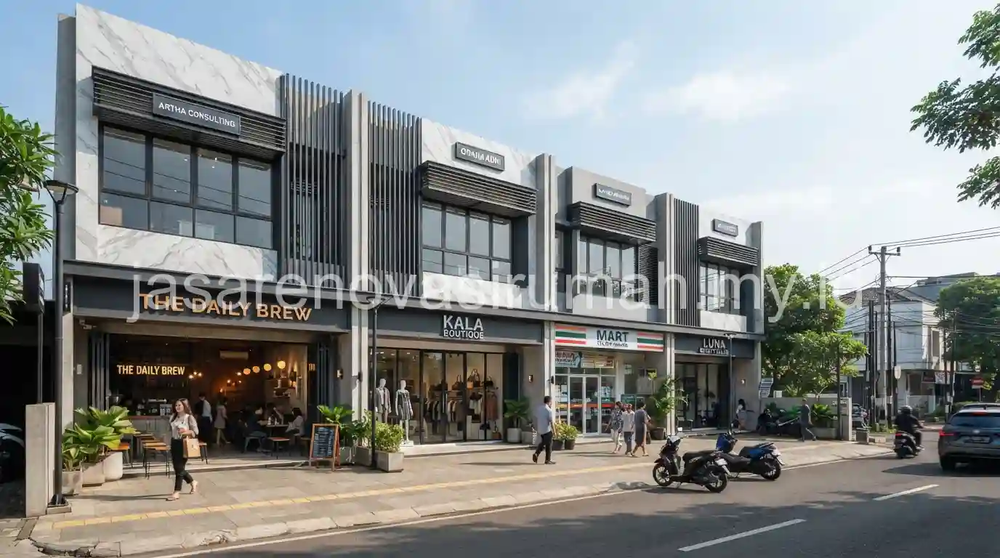
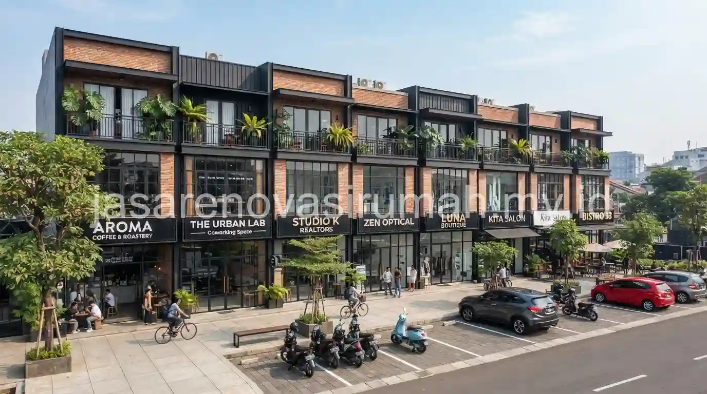

Jasa kontraktor ruko Kelapa Gading yang berpengalaman memahami tantangan membangun di kawasan padat dan ramai lalu lintas, mulai dari akses material terbatas hingga jam kerja yang perlu disesuaikan dengan aktivitas komersial sekitar, sambil tetap menjaga RAB transparan dan timeline pengerjaan yang jelas.
Kawasan Kelapa Gading yang dikenal sebagai salah satu pusat bisnis di Jakarta Utara membuat kebutuhan ruko baru untuk usaha ritel, kuliner, maupun kantor terus meningkat dari waktu ke waktu.
Apa Tantangan Khusus Membangun Ruko di Kawasan Padat seperti Kelapa Gading?
Tantangan utama membangun ruko di kawasan padat adalah keterbatasan akses jalan untuk mobilisasi material dan alat berat, serta kebutuhan koordinasi jadwal kerja agar tidak mengganggu aktivitas bisnis di sekitar lokasi proyek.
Beberapa tantangan lain yang umum dihadapi saat membangun ruko di kawasan komersial ramai:
- Ruang kerja yang terbatas karena berdempetan langsung dengan bangunan lain di kiri dan kanan lahan.
- Perlu koordinasi dengan pengelola kawasan atau asosiasi pedagang setempat terkait jadwal dan jam kerja konstruksi.
- Pengelolaan kebisingan dan debu proyek agar tidak mengganggu toko atau kantor yang masih beroperasi di sekitarnya.
- Kebutuhan perizinan tambahan terkait dampak lalu lintas selama masa konstruksi berlangsung.
Kontraktor yang berpengalaman menangani proyek di kawasan padat seperti ini biasanya sudah memiliki strategi mitigasi tersendiri, termasuk pengaturan jadwal pengiriman material di luar jam sibuk untuk meminimalkan gangguan terhadap lalu lintas sekitar.
Apa Saja Tahapan Pembangunan Ruko 2-3 Lantai di Area Komersial Ramai?
Tahapan pembangunan ruko di kawasan padat pada dasarnya mengikuti prinsip yang sama dengan pembangunan ruko pada umumnya, namun dengan perhatian ekstra pada tahap mobilisasi material dan koordinasi jadwal kerja.
Berikut tahapan umum yang biasa dilalui dalam proyek pembangunan ruko di kawasan komersial ramai:
- Perencanaan struktur dan RAB dengan mempertimbangkan keterbatasan akses lokasi.
- Koordinasi jadwal mobilisasi material dengan pengelola kawasan atau asosiasi pedagang setempat.
- Pekerjaan pondasi dan struktur utama dengan pengaturan waktu kerja yang meminimalkan gangguan kebisingan.
- Pekerjaan arsitektur dan finishing dengan pengawasan ketat terhadap kebersihan area sekitar proyek.
- Pemasangan utilitas komersial seperti listrik daya besar sesuai kebutuhan operasional usaha.
Perencanaan legalitas bangunan juga penting dipersiapkan sejak awal, mengikuti prinsip serupa dengan panduan cara mengurus IMB ruko komersial, mengingat kawasan komersial padat biasanya memiliki pengawasan perizinan yang lebih ketat dibanding kawasan perumahan biasa.
Berapa Lama Proses Pembangunan Ruko di Kawasan Ini Biasanya Berlangsung?
Durasi pembangunan ruko di kawasan padat seperti Kelapa Gading cenderung sedikit lebih lama dibanding kawasan yang lebih lapang, karena keterbatasan akses dan penyesuaian jadwal kerja dengan aktivitas sekitar.
Secara umum, pembangunan ruko 2-3 lantai di kawasan komersial ramai membutuhkan waktu sekitar lima hingga delapan bulan dari tahap perencanaan hingga serah terima, tergantung kompleksitas struktur dan tingkat kesulitan mobilisasi material ke lokasi proyek.

Kontraktor yang sudah berpengalaman di kawasan ini biasanya dapat memberikan estimasi waktu yang lebih akurat berdasarkan kondisi lapangan riil.
Kesalahan Umum Saat Membangun Ruko di Kawasan Komersial Padat
Kesalahan yang paling sering terjadi adalah tidak mempertimbangkan keterbatasan akses lokasi sejak tahap perencanaan, sehingga proses mobilisasi material menjadi terhambat dan memperpanjang durasi proyek.
Kesalahan lain yang perlu dihindari:
- Tidak berkoordinasi dengan pengelola kawasan atau tetangga bisnis terkait jadwal kerja konstruksi.
- Mengabaikan pengelolaan kebisingan dan debu proyek yang bisa mengganggu operasional bisnis sekitar.
- Memilih kontraktor tanpa pengalaman menangani proyek di kawasan padat dan ramai lalu lintas.
Pada akhirnya, membangun ruko di kawasan padat seperti Kelapa Gading membutuhkan kontraktor yang tidak hanya memahami struktur bangunan komersial, tetapi juga mampu mengelola tantangan logistik dan koordinasi dengan lingkungan sekitar.
Tim jasa kontraktor ruko kami siap membantu mulai dari konsultasi desain, penyusunan RAB, hingga serah terima proyek, dan Anda bisa melihat referensi hasil kerja kami pada portofolio proyek komersial sebelum memulai konsultasi.